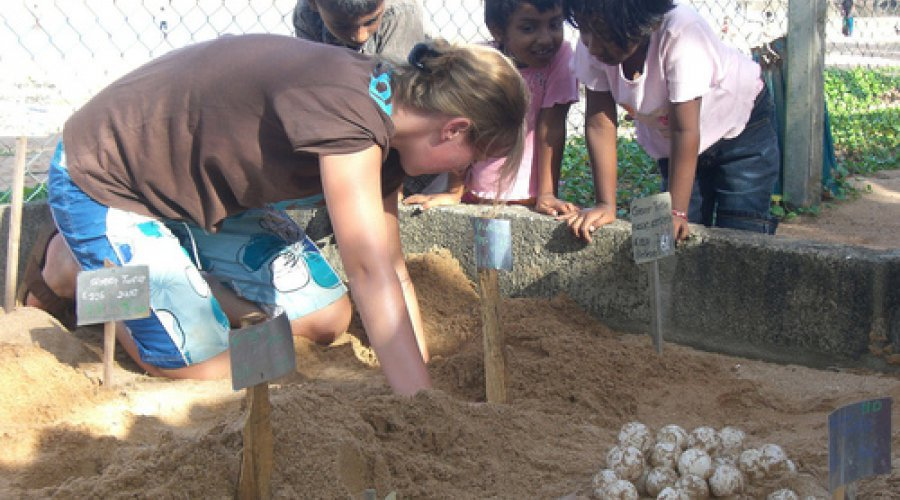
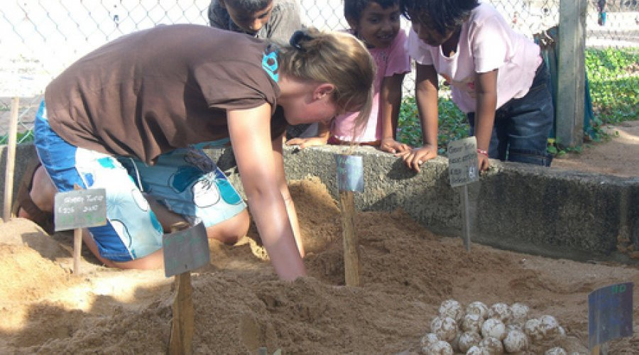

HIKKADUWA
HATCHERY
Preserving Marine Marvels in Paradise!
Welcome to Hikkaduwa's hidden gem, the Turtle Haven! Immerse yourself in the world of these fascinating creatures as you step into our hatchery. Witness the incredible journey of sea turtles from the moment they hatch to their courageous swim into the vast ocean. Our passionate team is dedicated to conserving and protecting these endangered species. Learn about their life cycle, nesting habits, and the challenges they face in the wild. Get up close and personal with these gentle beings as you observe them in their natural habitat. Join us in our mission to ensure the survival of these magnificent turtles for generations to come!Discover Hikkaduwa's Hatchery Delights!
Turtle Feeding
Get up close and personal with the resident turtles as you participate in their feeding sessions. Learn about their diet, feeding habits, and the important role they play in maintaining the balance of marine ecosystems.Hatchling Releases
Witness the incredible moment when baby turtles make their way to the ocean for the first time. Join our hatchling release program and experience the joy of seeing these adorable creatures embark on their journey to the vast sea.Turtle Nesting Site Visits
Embark on an exciting adventure to witness the nesting process of sea turtles. Accompanied by our experienced guides, explore the sandy beaches where these ancient mariners lay their eggs, and gain a deeper understanding of the challenges they face.Educational Exhibits
Explore our exhibits that showcase the life history and conservation efforts of sea turtles. Learn about the threats they encounter and discover ways you can contribute to their protection.Turtle Conservation Talks
You can also engage in informative and interactive sessions led by our knowledgeable staff. Discover fascinating facts about sea turtles, their life cycle, and the conservation efforts taking place to protect these magnificent creatures.Gallery
 
